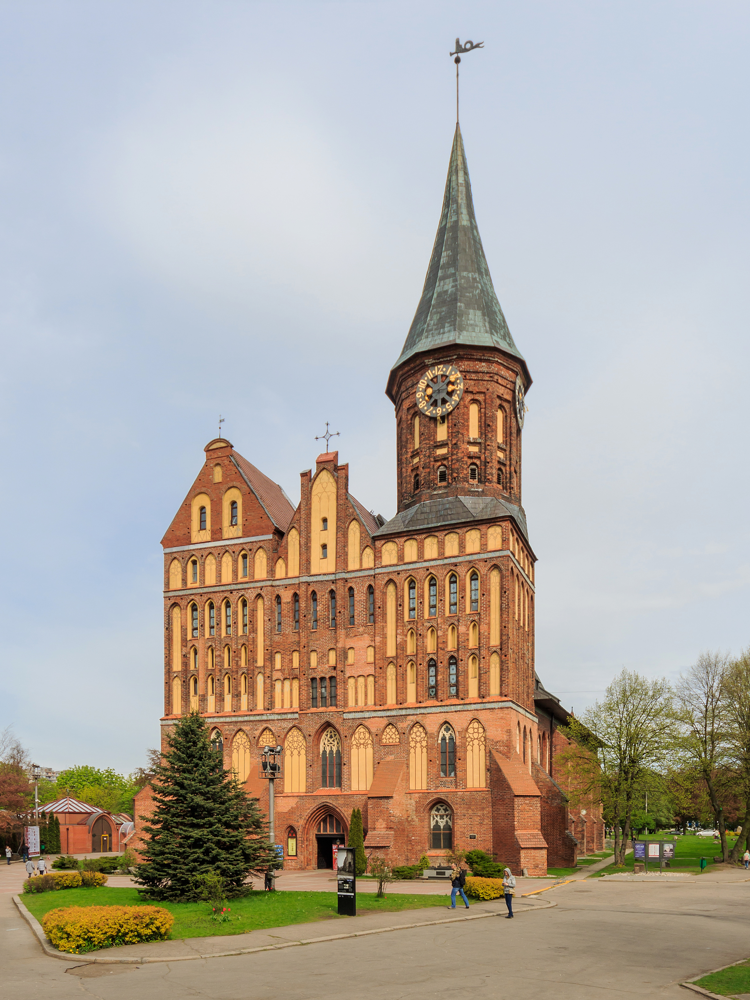
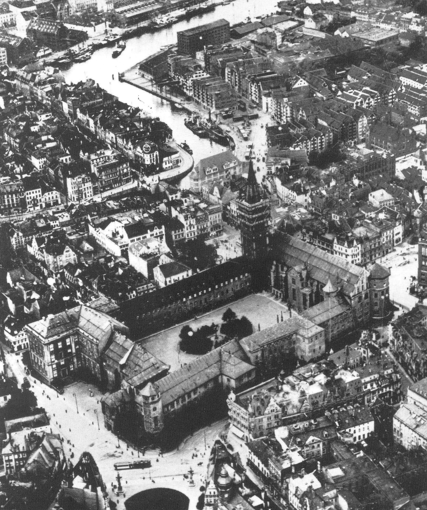
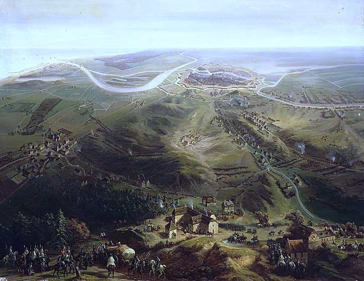
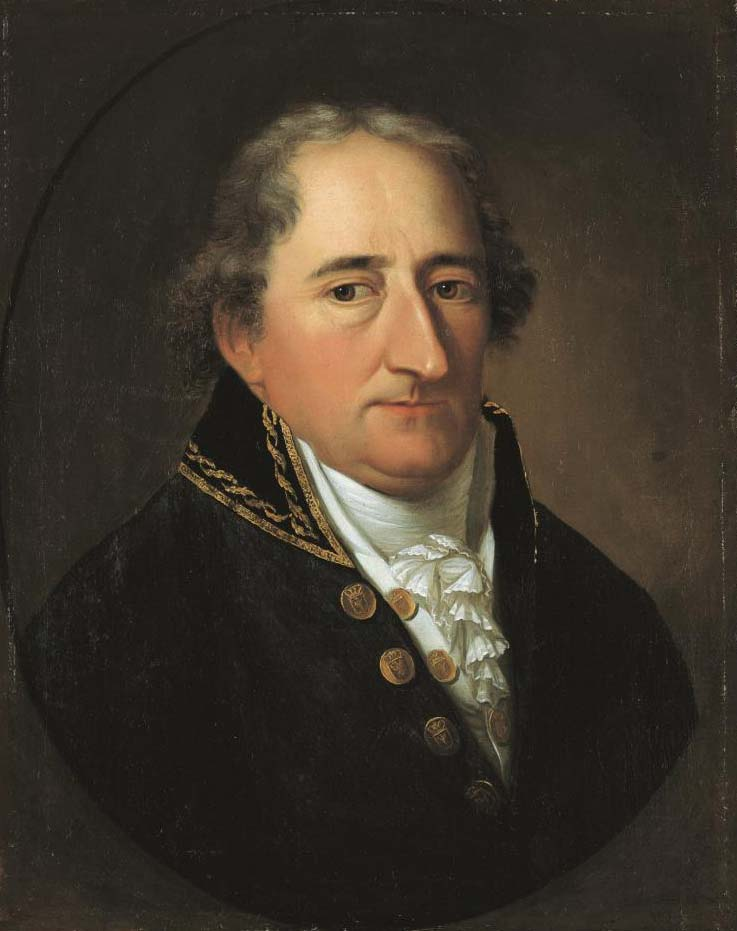

전쟁의 끝은 어디인가? - 러시아의 고민과 해결책
게시: 2022-01-03T06:30:23+09:00
코브노의 다리를 건너 네만 강을 건넌 그랑다르메의 장병들은 이제 살았다며 감격의 눈물을 흘렸습니다. 그야말로 최후방을 지키며 직접 러시아군에게 마지막 머스켓 소총을 쏜 뒤 그 소총을 강바닥에 집어던진 뒤 돌아선 네 원수의 행동도, 이제 전쟁은 끝났으며 러시아군의 추격은 여기까지라는 철석같은 믿음이 있었기 때문이었습니다. 그러나 이제 여유있는 발걸음으로 쾨니히스베르크를 향하던 그랑다르메 병사들은 코삭 기병들이 얼어붙은 네만 강을 대규모로 건너 추격해오자 깜짝 놀랐습니다. 어떻게 생각하면 당연한 일이었습니다. 코삭들은 국경에 대한 개념도 없고 존중할 의사도 없었거든요. 그들은 그저 저항할 수 없는 패잔병들을 습격해서 노략질을 하고 포로를 잡을 생각 밖에 없었습니다. 러시아 정규군이 대거 침공하는 것도 아니었는데, 아직 수만의 병력이 남은 그랑다르메는 이런 코삭 기병들의 습격에 대해 왜 대비하지 못했을까요? 실은 나폴레옹의 전성기 때에도 네만 강에 수비병을 주욱 늘어 세울 수는 없었습니다. 원래 유럽에서 국경이라는 것은 인간의 머리 속에 존재하는 선일 뿐이고, 그 길고 복잡한 국경선에 물리적 방어시설을 갖추는 것은 고사하고 평상시에 보초병을 세우는 것도 불가능했습니다. 국경을 지키는 것은 주요 거점에 집결해 있는 'xxx 방면군'이라는 기동력을 갖춘 군부대였습니다. 뮈라도 코브노에서 철수한 뒤 황량한 네만 강변에 캠프를 꾸리지는 않았고, 동프로이센의 수도인 쾨니히스베르크에 사령부를 차리고 거기서 필요시 부대를 출동시켜 러시아군을 막을 생각이었습니다. 그러나 그건 러시아 정규군이 쳐들어올 때의 이야기이고, 가볍게 밀고 들어와 가볍게 물러나는 코삭 기병들의 행패를 막으려면 경기병 부대를 출동시키는 것 외에는 대응책이 많지 않았습니다. 그런데 이미 뮈라 휘하에는 남아있는 기병대가 거의 없었지요. 다행히 코삭들은 감히 쾨니히스베르크 근처까지 깊숙히 쳐들어오지는 못했습니다만, 지친 몸을 이끌고 쾨니히스베르크를 향하던 낙오병들은 뒤따라오는 코삭들의 창에 찔려 죽거나 포로가 되어 다시 네만 강을 건너 끌려가야 했습니다.

(쾨니히스베르크는 프로이센 공작령의 발원지이기도 하지만, 더 유명한 것은 바로 임마뉴엘 칸트의 고향이라는 점입니다. 이 건물은 쾨니히스베르크 성당(Königsberger Dom)인데, 여기에 칸트가 묻혀 있습니다. 지금은 모두 러시아 땅입니다. 칸트가 러시아 땅에 묻혀 있는 거지요.)

(이 건물은 1925년에 촬영된 쾨니히스베르크 궁전(Königsberger Schloss)입니다. 프레겔(Pregel) 강변의 요새로 시작하여 튜톤 기사단장의 궁전이 되었다가 결국 프로이센 공작의 궁전이 되었습니다. 여기가 바로 프로이센 왕국의 발원지라고 할 수 있습니다. 아마 뮈라의 임시 사령부도 이 건물에 있었을 것입니다.) 코삭들은 그렇다치고, 과연 러시아 정규군을 이끌고 있떤 쿠투조프의 의도는 어떤 것이었을까요? 또 짜르 알렉산드르의 생각은 어떤 것이었을까요? 그 둘의 생각은 정확히 일치하는지는 않았습니다. 나폴레옹이 파리에 입성하던 즈음인 12월 19일, 빌나에 입성한 쿠투조프는 자신이 나폴레옹을 물리친 것이 자신이 아무 것도 하지 않았기 때문이라는 것을 너무나 잘 알고 있었습니다. 따라서 그에게 이 전쟁은 나폴레옹이 네만 강을 건넌 순간 끝난 것이었고, 이제 자신은 느긋하게 눌러앉아 사방에서 몰려오는 축전이나 받으면서 안락함을 즐기기만 하면 된다고 생각했습니다. 하지만 쿠투조프보다 4일 더 늦게 빌나에 들어온 알렉산드르는 약간 생각이 달랐습니다. 지나치게 진지하고 신앙심이 깊었던 알렉산드르는 (쿠투조프가 아닌) 자신이 나폴레옹을 무찌른 것은 오로지 주님의 뜻이며 지상에 하나님의 뜻을 펼치기 위해서는 저 악마 나폴레옹을 유럽에서 완전히 축출해야 한다고 굳게 믿고 있었습니다. 또 러시아 귀족층들은 이번 기회에 적어도 바르샤바 공국은 완전히 러시아 땅으로 만들어야 한다고 주장했으며, 혹시 여건이 된다면 쾨니히스베르크를 포함한 동프로이센과 단치히 자유시까지 손에 넣으면 좋겠다는 욕심을 드러냈습니다.

(제4차 대불동맹전쟁 중 일부로서 1807년 3월부터 시작된 프랑스 제10군단의 단치히 포위전 모습입니다. 저 멀리 비스툴라(Vistula, 폴란드 발음으로는 비스와, 독일식으로는 바익설(Weichsel)) 강변에 보방식 요새 특유의 별모양 성벽과 해자가 보이지요. 5월까지 계속된 포위 끝에 성공적으로 단치히를 함락시킨 르페브르 원수는 그 공으로 나폴레옹으로부터 단치히 백작(Duc de Danzig)에 봉해집니다. 원래 1793년 폴란드 분할 때 프로이센 영토가 된 단치히는 이때 나폴레옹에 의해 반독립인 '단치히 자유시'(Ville libre de Dantzig)가 됩니다. 나폴레옹의 몰락 이후 서프로이센의 수도가 되었으나, WW1에서 독일이 패배한 이후 연합군에 의해 다시 '단치히 자유시'(Freie Stadt Danzig)가 됩니다. 그리고는 히틀러가 이 도시를 수복하겠다고 나서게 되지요.) 잠깐, 프랑스의 위성국가인 바르샤바 공국은 그렇다치고, 프랑스 땅도 아닌 동프로이센을 러시아가 먹는다고요? 예, 프로이센은 당시 적어도 형식적으로는 프랑스의 동맹국으로서 러시아를 침공한 그랑다르메의 일원이었습니다. 무엇보다, 러시아에서 패퇴한 그랑다르메는 동프로이센의 수도 쾨니히스베르크로 도망쳐 들어가 있었습니다. 그러니 러시아군이 쾨니히스베르크를 향해 진격하는 것은 당연한 일이었고, 다소 억울하더라도 프로이센은 패전국으로서 영토를 침공당해도 싼 일이었습니다. 그러나 러시아가 동프로이센 영토를 침공하는 것이 잘 하는 일이었을까요? 거기에 대해서는 쿠투조프와 알렉산드르의 판단이 일치했습니다. 그건 절대 현명한 생각이 아니라는 판단이었습니다. 쾨니히스베르크로 대대적인 추격을 이어가기에는, 무엇보다 그랑다르메를 추격하는 러시아군의 피해가 이미 너무 컸습니다. 베레지나를 건넌 이후 별다른 전투를 벌이지도 않았는데도 그랑다르메 못지 않게 러시아군도 깜짝 놀랄 속도로 녹아내리고 있었습니다. 따라서 여기서 네만 강을 건너 그랑다르메 패잔병을 습격한다는 것은 나폴레옹이 저지른 실수를 그대로 반복하는 자살행위였습니다. 이미 알렉산드르는 11월 30일 새로 칙령을 내려 농노 500명마다 8명씩 추가적으로 징집병을 내놓도록 했습니다만, 이들을 모으고 무장 및 훈련시키려면 시간이 훨씬 더 많이 필요했습니다. 이 문제에 대해, 그리고 이 문제를 어떻게 극복할 것인가에 대해서도 쿠투조프와 알렉산드르는 (비록 서로 협의한 것은 아니었지만) 같은 생각을 하고 있었습니다. 나폴레옹의 반자발적인 동맹국들, 그 중에서도 프로이센과 오스트리아를 적극 활용해야 한다는 것이었습니다. 이미 12월 초부터 쿠투조프는 저 멀리 독일 지역의 크고작은 공국들과 왕국들을 향해 '이제야말로 그대들이 나폴레옹의 멍에를 뿌리치고 자유를 획득할 수 있는 순간'이라며 반프랑스 봉기를 부추기는 성명서를 발표했습니다. 말로는 독일 민족 전체를 향한 호소였지만 사실상 프로이센을 콕 집어 부추기는 것이었습니다. 사실 대부분의 독일 공국들과 왕국들은 나폴레옹이 가져온 새로운 질서에 대해 큰 반발은 없었습니다. 물론 대륙 봉쇄령과 그에 따른 경제적 궁핍은 싫었지만, 왕과 대공들은 나폴레옹 편에 붙은 덕분에 작위가 올라가고 영토가 늘었으며, 시민 계급은 나폴레옹 법전에 따른 근대적 통치를 얻었습니다. 하지만 제국으로서의 체면이 깎이고 영토를 잃어버린 오스트리아는 마음이 편치 않았고, 누구보다도 프리드리히 대왕이 쌓아올렸던 긍지가 예나-아우어슈테트에서 와르르 무너지고 3류 소왕국으로 찌그러든 프로이센의 원한은 누가 봐도 명백했습니다. 러시아의 이런 생각은 혼자만의 뇌내망상이 아니었습니다. 예나-아우어슈테트의 치욕을 되갚기 위해 프로이센의 개혁을 추진하다 나폴레옹에게 미운 털이 박혀 러시아로 도망쳤던 프로이센의 총리 슈타인 (Heinrich Friedrich Karl vom und zum Stein)은 이미 11월 중순부터 짜르에게 나폴레옹을 러시아에서 격퇴하는 것으로 그치지 말고 유럽의 구원자로 나서라고 격려하고 있었습니다. 실제로 그랑다르메가 후퇴를 멈춘 동프로이센 시민들은 프랑스군에 대해 적대적인 정서를 숨기지 않았습니다. 쾨니히스베르크에서는 대학생들이 프랑스의 독재를 떨치고 일어나라는 적대적인 운동권 노래와 시를 공공연히 불러댔습니다. 시민들은 남루한 차림으로 후퇴해 들어오는 패잔병들을 경멸이 가득한 비웃음으로 맞이했고, 침을 뱉기도 했습니다. 심지어 같은 독일인 병사들이라고 해도 그런 대접을 피하지 못했습니다. 조금 인적이 드문 시골로 나가면 분위기가 더욱 험악하여, 멋모르고 2~3명이서 먹을 것을 구하러 돌아다니다가는 마을 사람들에게 훔씬 두들겨 맞기도 했습니다.

(프로이센이 근대적인 국가로 거듭 나기 위해 개혁에 힘을 쓰다 나폴레옹에게 쫓겨난 슈타인입니다. 그의 프로이센을 중심으로 한 독일의 재편성을 꿈꾸었고 러시아의 힘을 빌어 프로이센이 프랑스를 꺾고 다시 중부 유럽의 강자가 되기를 원했습니다. 구체적으로는 작센 왕국을 프로이센이 흡수하기를 원했고, 또 프로이센에 근대적인 의회 제도를 도입하기를 원했습니다. 그러나 반동적인 수구에 불과했던 멍청한 국왕 빌헬름 3세는 슈타인의 열망을 배신했고, 프로이센을 강국으로 만드려던 노력도 오스트리아의 메테르니히에게 제압되었기 떄문에, 그의 말년은 꼭 그리 행복한 것만은 아니었습니다.) 이렇게 프로이센에서는 반프랑스 분위기가 무르익어 가고 있었지만 정작 프로이센 야전군 상당수는 나폴레옹의 명령 하에 러시아군과 싸우고 있었습니다. 이런 부조화가 과연 언제까지 이어질 수 있었을까요? 혹시 반란이 일어나거나 명령 불복종이 일어나거나 하지 않았을까요? 다음 편에는 막도날 휘하의 프로이센군을 보시겠습니다. Source : 1812 Napoleon's Fatal March on Moscow by Adam Zamoyski
https://en.wikipedia.org/wiki/Siege_of_Danzig_(1807) https://en.wikipedia.org/wiki/Heinrich_Friedrich_Karl_vom_und_zum_Stein https://en.wikipedia.org/wiki/Free_City_of_Danzig https://en.wikipedia.org/wiki/Free_City_of_Danzig_(Napoleonic)